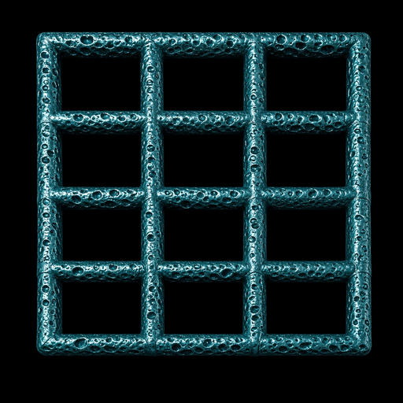

Tool Shelf
Your inventory reference, offline and in your pocket.
Open the appWhat it does
Tool Shelf is a catalog and inventory reference you keep on a phone or computer. Search your list, open a row for details, and keep working without an internet connection. Your data stays on the device.
How to install
Open the app in your browser, then add it to your home screen or install it from the address bar. After that, it works offline. Step-by-step instructions are on the Downloads page.
Built for the trades
Use it as a pocket reference in any trade. Load your own catalog as a CSV file. A catalog import currently needs the headers Year(s), Make, Model, Product_Name, and id.